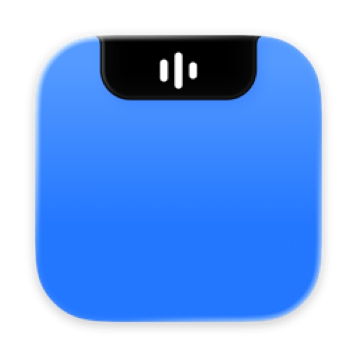

Not an Island
A dynamic notch for your Mac. What's playing, what your Mac is doing and what you're waiting for, in the space around the camera.
Free and open source. Requires macOS 15 Sequoia or later.
What it does
- Music
- Artwork and a moving visualiser beside the camera while Apple Music plays. Point at the notch for the track, a scrubber and playback controls.
- Your Mac at a glance
- CPU, memory and network in the expanded notch, with a short notice when you plug in, unplug or connect your AirPods.
- Extensions
- Timers, scores, deliveries: anyone can build an activity for the notch. Choose which ones you run and in what order.
- Any display
- On a Mac or monitor without a notch, the same activities live in an island at the top of the screen.
Installing
- Open NotAnIsland.dmg and drag Not an Island into Applications.
- Open Not an Island. macOS says it can't be opened, because the app isn't notarised by Apple yet. Click Done.
- Open System Settings ▸ Privacy & Security, scroll down and click Open Anyway next to Not an Island. Confirm with your password.
You only do this once per version. Each update asks again for its Music and Bluetooth permissions.
Build an extension
Extensions are SwiftUI views that Not an Island draws in the notch, each running in its own sandboxed process. The NotAnIslandKit package gives you the wings, the bubble beside them, the expanded view and banners, and Not an Island handles every animation.
Like Not an Island, every extension is open source under the GPL-3.0.
Join the community
The Discord is where to report a problem, ask for help or suggest what the notch should do next. Extension developers get their own role and channels.
Join the Discord